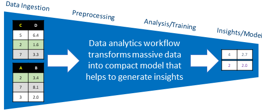

Getting Started¶
Intel® Scalable Dataframe Compiler (Intel® SDC) extends capabilities of Numba* to compile a subset of Pandas* into native code. Being integral part of Numba* it allows to combine regular NumPy* codes with Pandas* operations.
Like in Numba* the compilation is controlled by a regular @njit decorator and respective compilation
directives which control its behavior.
The code below illustrates a typical workflow that Intel® SDC is intended to compile:
import pandas as pd
from numba import njit
# Dataset for analysis
FNAME = "employees.csv"
# This function gets compiled by Numba*
@njit
def get_analyzed_data():
df = pd.read_csv(FNAME)
s_bonus = pd.Series(df['Bonus %'])
s_first_name = pd.Series(df['First Name'])
m = s_bonus.mean()
names = s_first_name.sort_values()
return m, names
# Printing names and their average bonus percent
mean_bonus, sorted_first_names = get_analyzed_data()
print(sorted_first_names)
print('Average Bonus %:', mean_bonus)
The workflow typically starts with reading data from a file (or multiple files) into a dataframe (or multiple dataframes) followed by data transformations of dataframes and/or individual columns, cleaning the data, grouping and binning, and finally by feeding the cleaned data into machine learning algorithm for training or inference.
{kind=link}
We also recommend to read A ~5 minute guide to Numba for getting started with Numba*.
Installation¶
You can use conda and pip package managers to install Intel® SDC into your Python* environment.
Intel SDC is available on the Anaconda Cloud intel/label/beta channel. Distribution includes Intel SDC for Python 3.6 and 3.7 for Windows and Linux platforms.
Intel SDC conda package can be installed using the steps below:
> conda create -n sdc_env python=<3.7 or 3.6>
> conda activate sdc_env
> conda install sdc -c intel/label/beta -c intel -c defaults -c conda-forge --override-channels
Intel SDC wheel package can be installed using the steps below:
> conda create -n sdc_env python=<3.7 or 3.6> pip
> conda activate sdc_env
> pip install --index-url https://pypi.anaconda.org/intel/label/beta/simple --extra-index-url https://pypi.anaconda.org/intel/simple --extra-index-url https://pypi.org/simple sdc
Experienced users can also build Intel SDC from sources for Linux* and for Windows*.
Basic Usage¶
The code below illustrates a typical ML workflow that consists of data pre-processing and predicting stages. Intel® SDC is intended to compile pre-processing stage that includes reading dataset from a csv file, filtering data and performing Pearson correlation operation. The prediction based on gradient boosting regression module is made using scikit-learn module.
import time
import pandas as pd
from numba import njit
from sklearn.ensemble import GradientBoostingRegressor
from sklearn.model_selection import train_test_split
@njit(parallel=True)
def preprocess_data():
# Reading stock prices from CSV file
df_prices = pd.read_csv('./prices.csv') # Public dataset from https://www.kaggle.com/dgawlik/nyse
# Select stock of interest (INTC)
df_prices_intc = df_prices[df_prices['symbol'] == 'INTC']
# Remove unused columns
df_prices_intc = df_prices_intc.drop(columns=('symbol', 'volume'))
# The year of interest is 2012
df_prices_intc_2012 = df_prices_intc[df_prices_intc['date'] <= '2012-12-31']
df_prices_intc_2012 = df_prices_intc_2012[df_prices_intc['date'] >= '2012-01-01']
# Pearson correlation between open and close prices for 2012
corr_open_close_2012 = df_prices_intc_2012['open'].corr(df_prices_intc_2012['close'])
# Keep days when started low and finished high in 2012
df_prices_intc_2012_low2high = df_prices_intc_2012[df_prices_intc['open'] <= df_prices_intc['low']*1.005]
df_prices_intc_2012_low2high = df_prices_intc_2012_low2high[df_prices_intc['close'] >= df_prices_intc['high']*0.995]
# Prepare data for forecasting
x = df_prices_intc_2012['open'].values.reshape(-1, 1)
y = df_prices_intc_2012['close']
return df_prices_intc_2012, corr_open_close_2012, df_prices_intc_2012_low2high, x, y
t_start = time.time()
data2012, coc12, data2012_low2high, x, y = preprocess_data()
x_train, x_test, y_train, y_test = train_test_split(x, y, test_size=0.2, shuffle=False)
regr = GradientBoostingRegressor()
my_fit = regr.fit(x_train, y_train)
y_pred = regr.predict(x_test)
sc = regr.score(x_test, y_test)
t_end = time.time()
print('2012')
print(data2012.head())
print('Pearson correlation')
print(coc12)
print('Days traded low to high')
print(data2012_low2high)
print(y_pred)
print(sc)
print('Execution time: ', t_end - t_start)
What If I Get A Compilation Error¶
Todo
Need to give basic information that hpat and numba do not support full set of Pandas and Numpy APIs, provide the link to the API Reference section for Intel® SDC, relevant reference to Numba documentation.
Also give very short introduction to what kind of code Numba/Intel® SDC can compile and what cannot, i.e. type stability etc. Provide the links to relevant sections in Intel® SDC and Numba documentations focusing on compilation issues/limitations
Measuring Performance¶
Lets consider we want to measure performance of Series.max() method.
from numba import njit
@njit
def series_max(s):
return s.max()
- First, recall that Intel® SDC is based on Numba. Therefore, execution time may consist of the following:
Numba has to compile your function for the first time, this takes time.
Boxing and unboxing convert Python objects into native values, and vice-versa. They occur at the boundaries of calling a Numba* function from the Python interpreter. E.g. boxing and unboxing apply to Pandas* types like Series and DataFrame.
The execution of the function itself.
A really common mistake when measuring performance is to not account for the above behaviour and to time code once with a simple timer that includes the time taken to compile your function in the execution time.
A good way to measure the impact Numba JIT has on your code is to time execution using the timeit module functions.
Intel® SDC also recommends eliminate the impact of compilation and boxing/unboxing by measuring the time inside Numba JIT code.
Example of measuring performance:
import time
import numpy as np
import pandas as pd
from numba import njit
@njit
def perf_series_max(s): # <-- unboxing
start_time = time.time() # <-- time inside Numba JIT code
res = s.max()
finish_time = time.time() # <-- time inside Numba JIT code
return finish_time - start_time, res # <-- boxing
s = pd.Series(np.random.ranf(size=100000))
exec_time, res = perf_series_max(s)
print("Execution time in JIT code: ", exec_time)
See also Numba* documentation How to measure the performance of Numba?
See also Intel® SDC repository performance tests.
What If I Get Poor Performance?¶
If you get poor performance you need to consider several reasons, among which compilation overheads, overheads related to converting Python objects to native structures and back, amount of parallelism in compiled code, to what extent the code is “static” and many other factors. See more details in Intel® SDC documentation Getting Performance With Intel® SDC.
Also you need to consider limitations of particular function. See more details in Intel® SDC documentation for particular function API Reference.
See also Numba* documentation Performance Tips and The compiled code is too slow.
Build Instructions¶
Build instructions for Linux*: https://github.com/IntelPython/sdc#building-intel-sdc-from-source-on-linux Build instructions for Windows*: https://github.com/IntelPython/sdc#building-intel-sdc-from-source-on-windows